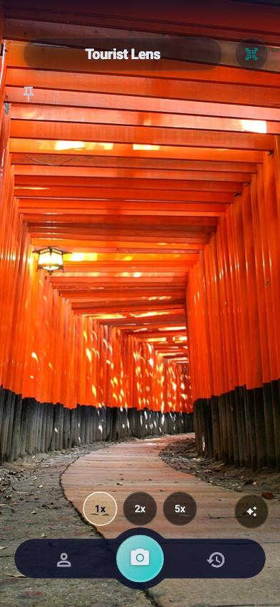
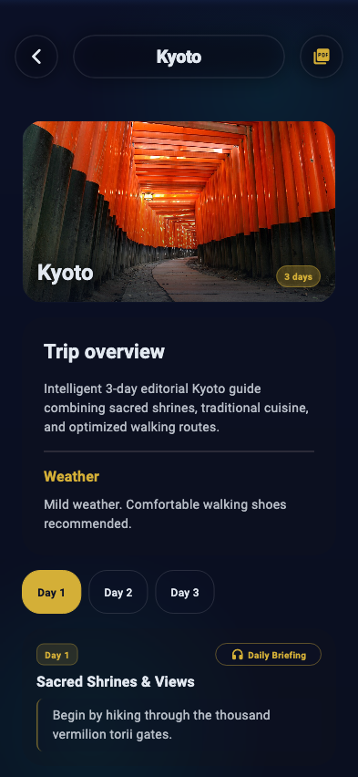
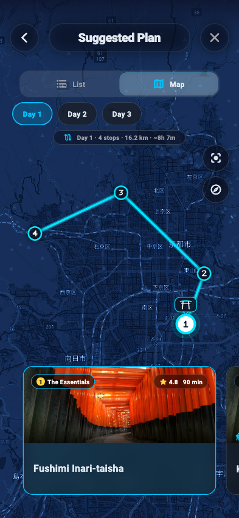

Point your camera.
Discover the story.
Aim at any monument, sculpture, or hidden street. Tourist Lens identifies it in real time and narrates its history in seconds — before you even lower your phone.

Designed with Apple precision.
Every screen, animation, and interaction is engineered to feel completely natural, responsive, and respectful of your privacy.
Sub-second recognition. Real confidence.
Point your lens at monuments, sculptures, or architectural details. Powered by multimodal vision AI, Tourist Lens delivers instant context with verified certainty.
Narrated in 8 languages.
Experience culture in your mother tongue: English, Español, Français, Italiano, Deutsch, Português, 中文, and 日本語.
Collect every wonder you explore.
Earn digital collectible stamps with date and coordinates whenever you discover a historic destination.
Personalized multi-day travel plans.
Plan trips without hours of research. The AI Wizard organizes POIs into optimized daily routes with walking times, weather insights, and daily audio briefings.

Four facets of your journey.
Toggle between Tourist Lens features to see how each screen accompanies your travel step by step.
Identify anything in your field of view.
Forget scrolling through travel blog lists. Aim at any landmark, façade, or statue. Tourist Lens recognizes it instantly, providing historical dates, cultural context, and interactive Q&A.
-
Live 1x / 2x / 5x Optical Framing: Zoom into distant architectural friezes with zero distortion.
-
Grounded Narration: Verified facts, historical anecdotes, and verified citations.
-
Ask Follow-ups: Tap 'Ask AI' to inquire about admission, architect biography, or hidden myths.
Curate your trip in three simple steps.
Select your destination city, trip length, and travel personality. The AI Guide generates an editorial itinerary that balances must-see monuments with scenic walking paths.
-
Daily Editorial Overview: Morning briefings and recommended walking shoes.
-
Curated Stops: Organized in logical geographical sequence to minimize transit exhaustion.
-
PDF Export: Download high-fidelity offline PDF itineraries anytime.
Your route mapped in high resolution.
Visualize your planned itinerary and all captured discoveries on an interactive dark-luxury map. Numbered stops, kilometer tallies, and estimated walking hours stay right at your fingertips.
-
Sequential Waypoints: Clear numeric route markers (1, 2, 3...) guide your day smoothly.
-
Live POI Cards: Swipe bottom cards to center the map on each historic attraction.
-
Battery-Optimized: Custom vector styling engineered to conserve OLED battery life.

A living journal of your travels.
Collect digital badges and commemorative passport stamps for every site visited worldwide. From the Eiffel Tower and Alhambra to Kyoto Torii gates, relive your adventures anytime.
-
Curated Badges: Collect artistic stamps celebrating heritage architecture.
-
City Filters: Organize discoveries by city (Kyoto, Paris, Rome, Agra, Granada...).
-
100% Encrypted: Your travel history remains stored locally on your device.
Privacy, by design.
Tourist Lens was architected on Apple's core belief: what happens on your device stays on your device. We never sell your location, track your browsing, or train models on your private photos.
On-Device Edge Filtering
Every photo is screened on your device before network transmission. Only landmarks are processed.
Certificate-Pinned Connections
Data in transit travels solely through strict TLS certificate-pinned endpoints against interception.
Local Enclave Encryption
Your passport, scans, and notes are encrypted with AES-256 keys protected inside the hardware Secure Enclave.
Honest Time Passes
No predatory automatic renewal subscriptions. Purchase honest time-based passes only when you travel.
Your next trip, already narrated.
Download Tourist Lens today. Free to start, no account required. Point your camera and let history speak.